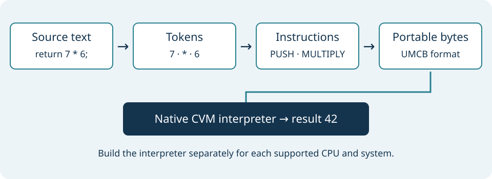

Building a Compiler in C
Build understanding by following the real Umicom C prototype from a short program to a checked result. A compiler translates a program into another representation. An interpreter reads that representation and carries out its instructions. You will study both, then see how the interpreter can become an application on Umicom Kernel.
This course covers a small arithmetic language written with C-like syntax. It does not describe a complete C compiler, a desktop operating system or finished support for every processor.
Choose how to begin
- Read each lesson and complete its paper exercise. No installation is needed for that route.
- If code is unfamiliar, visit Learning C for values, functions, arrays and return values. Each compiler lesson also explains the terms it introduces.
- For practical exercises, use the corresponding
umicom-csource and follow itsdocs/first-program.mdguide. Keep the application and compiler source versions together.

Lessons
- From source text to a result
- Read one token at a time
- Give expressions an unambiguous meaning
- Execute instructions with checked arithmetic
- Store a program as portable bytes
- Explain failures and test the boundaries
- Run the interpreter as a native Kernel program
- Understand architectures, firmware and boot media
- Design a small programming language in C
Continue into Umicom
- Umicom Framework Development: reusable services and user interfaces.
- Umicom Kernel from Scratch: memory, process boundaries and native program entry.
- Umicom OS from Scratch: Linux-based startup, recovery and image preparation.
Optional build and guest exercises have separate requirements. A successful host calculation does not demonstrate that a Kernel image booted or that a physical computer is supported.
Continue with a practical source study
A compiler first separates source text into small pieces called tokens. This lesson follows the Umicom C lexer as it skips a comment. You will use character positions to explain why checking the end of the input must happen before reading another character.
Build a small programming-language project
Follow the existing Umicom C implementation from a language rule to tokens, instructions and a bounded run. Keep the compiler in one repository; these exercises supply programs and observations.
- Project: specify and run a small language
- Project: inspect bytecode and bound execution
- Build an instruction viewer
- Admit decimal literals without overflow
- Validate stack shape before execution
- Budget execution and publish results
Open the project inputs and guide. Use the compiler repository's execution guide to build the host tool; native Kernel execution is a later, separate exercise.